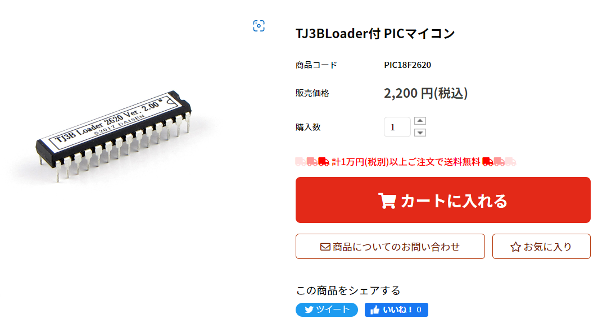
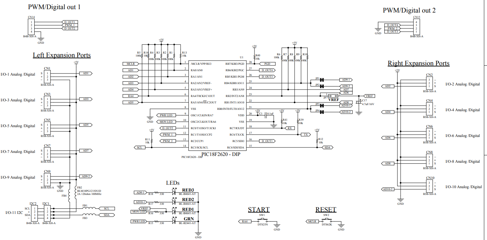
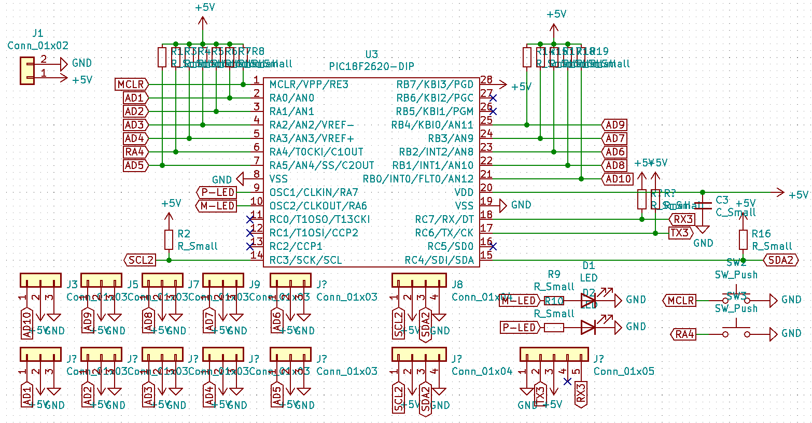
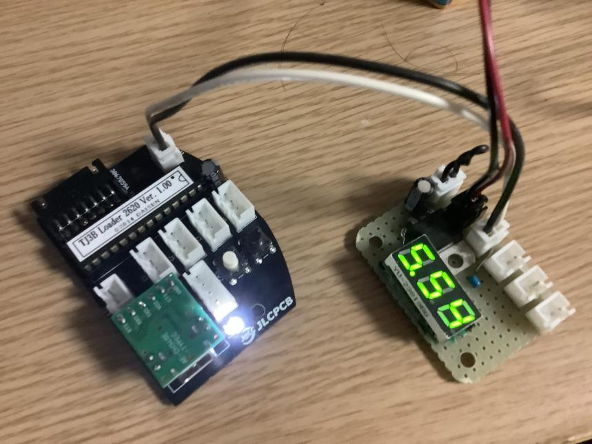

DAISEN製 TJ3BLoader付 PICマイコンで自作TJ3B
現在、品薄状態のTJ3B CORE。ロボカップジュニアでも使っている人が多いと思います。DAISENではTJ3Bに
搭載されているPICマイコンも発売されています。今回、それを使った自作TJ3Bの作り方を紹介しようと思います。
TJ3Bが入手できないぞ！？

多くのチームが利用しているTJ3B。今年行われたジャパンオープンでもいくつものチームで見られした
し私も使用していました。そんな中、DAISENのホームページを見ると現在TJ3B Coreは購入できない
状況です。新シーズンも始まりましたが、入手できていないチームにとってはとても痛い状況でしょう。
代用として、、、

DAISENではほかにもTJ3B Coreに使用されているPICマイコンを
単体で売っています。こちらは現在も購入できる状態です。そのため、TJ3B Coreを持って
いなくてもこれさえあれば、同じようなボードを作ることが可能です。なお、「C-Style」を利用して、プログラミングるするのももちろんTJ3B Coreと同様に可能です。
TJ3Bの回路図を見てみよう

これはTJ3Bの回路図の一部です。使用する抵抗の抵抗値や、コンデンサの容量も書いてあります。これ通りに作れば
動かすことができますが、いらない部分などもありますのでそこは回路例で見ていきましょう。また、TJ3Bと電池をつなぐ際、電圧が5V
ではない場合、別途降圧回路が必要です。
自作TJ3Bの回路図例

自作TJ3Bの回路ですが、I2Cで6chモータードライバーを使うなどで、ポートからのPWMなどの出力の必要がない場合、これぐらいの回路で十分動きます。
降圧回路等は、今回は取り扱わないので、三端子レギュレータなどを使用した降圧回路を、自作TJ3Bの回路内に組み込む、または外部に設置してください。なお、回路図すると少し複雑になるので
写真では、タグを使って、とても簡単にしていますが。同名のタグはつながっています。抵抗値などは、TJ3Bの回路図からご確認ください。このページの最下部でダウンロードできるようにしておきます。
余談

今シーズンも自作TJ3Bに取り組んでいます。今回制作した自作TJ3Bは回路をより小さくし、USB-type-Cでの書き込みができるものを制作しました。みなさまもぜひおもしろい
自作TJ3Bに挑戦してみてください。
読んでいただきありがとうございました
≫User Manual TJ3B- CORE≪